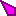

0.5.4 BETA
Game Cursor Changer
| 1 | Download and install with default options. YoloMouse should now be running as indicated by  icon on your taskbar. |
| 2 | Launch a game that uses a mouse cursor (not an FPS with reticle). |
| 3 | Get to the part of the game where you see the cursor you want to change. |
| 4 | Hit CTRL SHIFT ALT 1 (up to 9) to change that cursor. |
| 5 | Most games have multiple cursors that change according to their context. Repeat steps 3-4 for each cursor you wish to change. |
| 6 | To reset a cursor to the game default hit CTRL SHIFT ALT 0 |
| 7 | To decrease or increase cursor size use CTRL SHIFT ALT - or = |
| NOTE | For some games, like WoW, you may not see the cursor change right away. Hover over something that changes the cursor (like an enemy) then hover back and you should see your new cursor. |
| 64 Bit Games | Many new games are 64 Bit and require the 64 Bit version of YM. |
| Run as Admin | If a game is running as administrator YM must also run as administrator. |
| Hotkey Conflicts | Some games have CTRL SHIFT or ALT bound to change/hide cursor preventing the YM hotkey from assigning the intended cursor. Either rebind those keys in game or in YM. |
| Windows DPI Scaling | Disable windows dpi scaling. This only causes problems with some games like Diablo 3. |
| Hardware Cursor | If the hardware cursor setting is available in your game, ensure it is ON. This is standard in all modern games. |
| Ctrl Shift Alt 1-9 | Change active game cursor |
| Ctrl Shift Alt 0 | Reset current cursor to the game's default |
| Ctrl Shift Alt - or = | Decrease or increase cursor size |
| Ctrl Shift Alt A-Z | Additional cursor hotkeys |
| Start with Windows | Controls how YoloMouse starts with your system. |
| Show Icon | Hides the icon. Edit or delete Settings.ini to get it back. |
| Q | how work? |
| A | It hooks the OS part of game memory and intercepts call to SetCursor |
| Q | sounds like a BAN! |
| A | It does no more than what FRAPS does. If that wont get you banned this shouldnt either. |
| Q | I want to change hotkeys and other settings! |
| A | C:\Users\...\AppData\Local\YoloMouse\Settings.ini. then restart yolomouse. |
| 1 | Collect your .CUR or .ANI files and rename them to numbers between 1 and 35 (Example: 12.ANI). |
| 3 | Copy them to YoloMouse/Cursors. |
| 4 | Restart yolomouse. |
| 5 | Test using CTRL SHIFT ALT 1-9 or A-Z. 1-9 is file 1 to 9, Q is 10, W is 11, E is 12... |